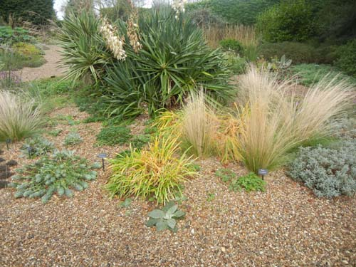
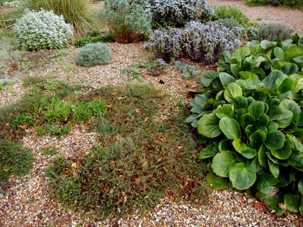
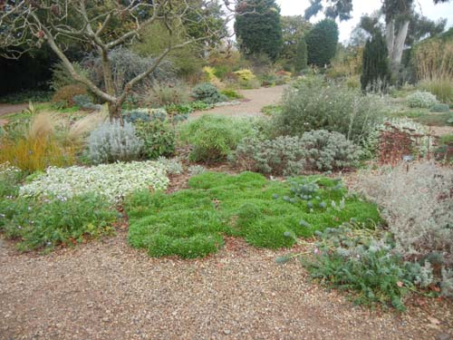
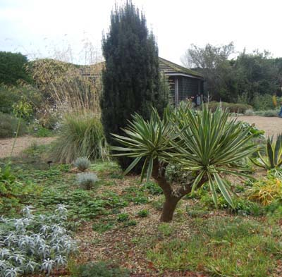
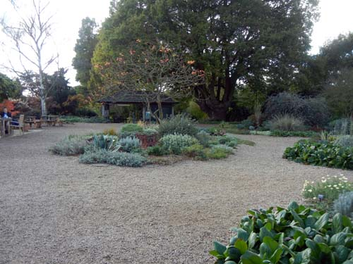
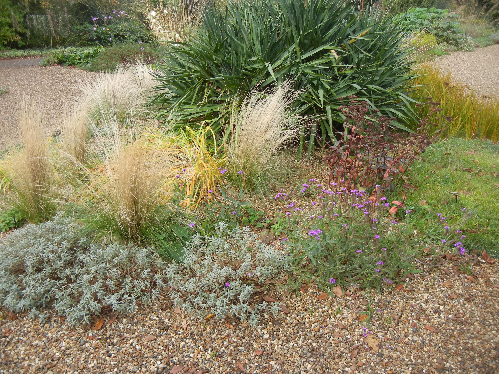
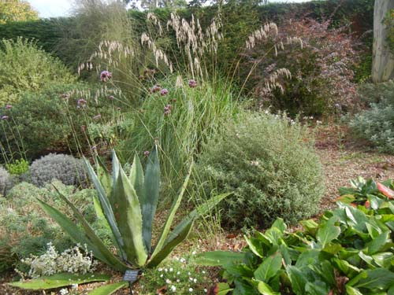
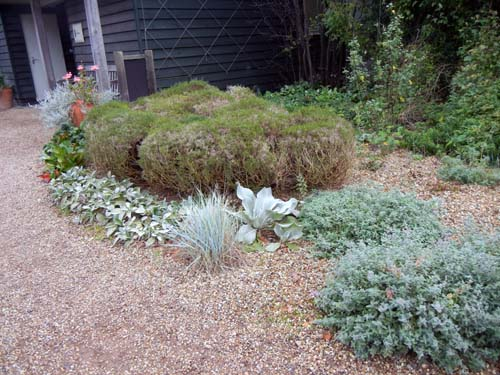

Wejście do zasadniczego ogrodu jest płatne. Przy furtce sprawdzają bilety. Ale zanim tam dojdziemy, trafiamy na coś, co można oglądać za darmo. To ulubione miejsce Beth Chatto - tak zwany suchy ogród. Powstał na najbardziej nieurodzajnym kawałku ziemi. Nigdy nie jest sztucznie nawadniany. Mimo tego zachwyca o każdej porze roku. Przyjrzałam mu się na wszystkie możliwe sposoby. Zainspirował mnie do stworzenia "srebrnej rabaty" w moim ogrodzie.




Ogród nie wymaga skomplikowanych zabiegów. Regularnie usuwane są tylko niektóre przekwitłe kwiatostany i ogranicza się rozrastanie roślin. No i wyjmuje przed zimą donice z agawami.


Opowiem jeszcze o samej Beth Chatto, bo jest osoba niezwykła, podobnie jak niezwykły jest jej ogród i przylegające do niego sklepik, szkółka, Tea Room, a przede wszystkim jej skromny, ale malowniczy dom. Zapraszam...